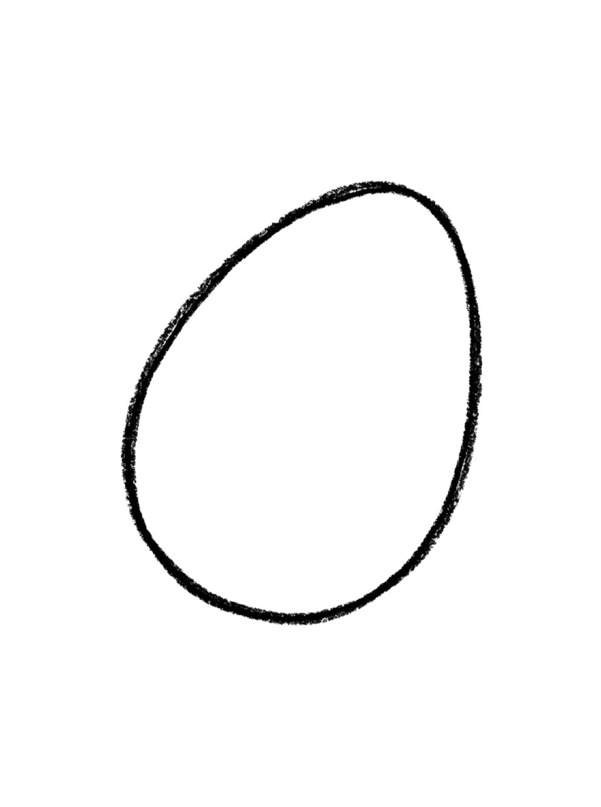
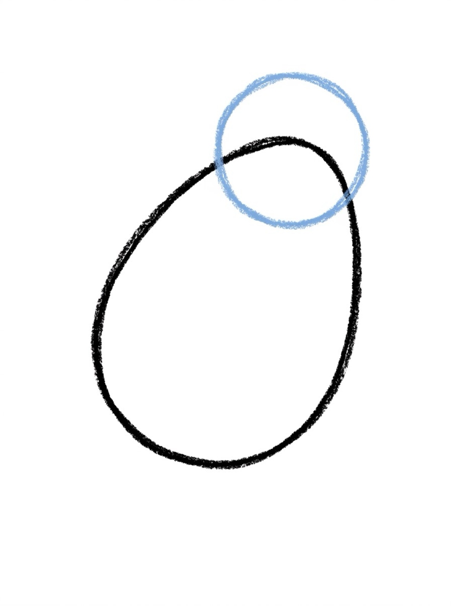
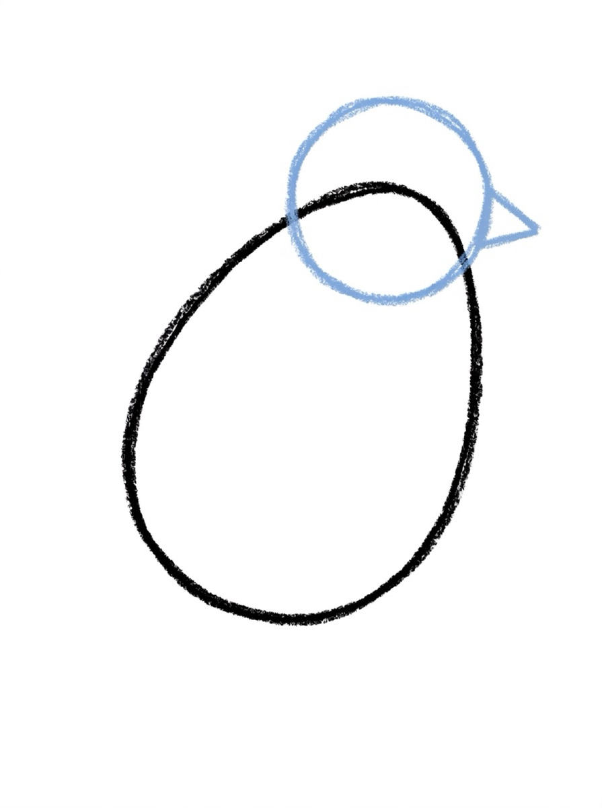
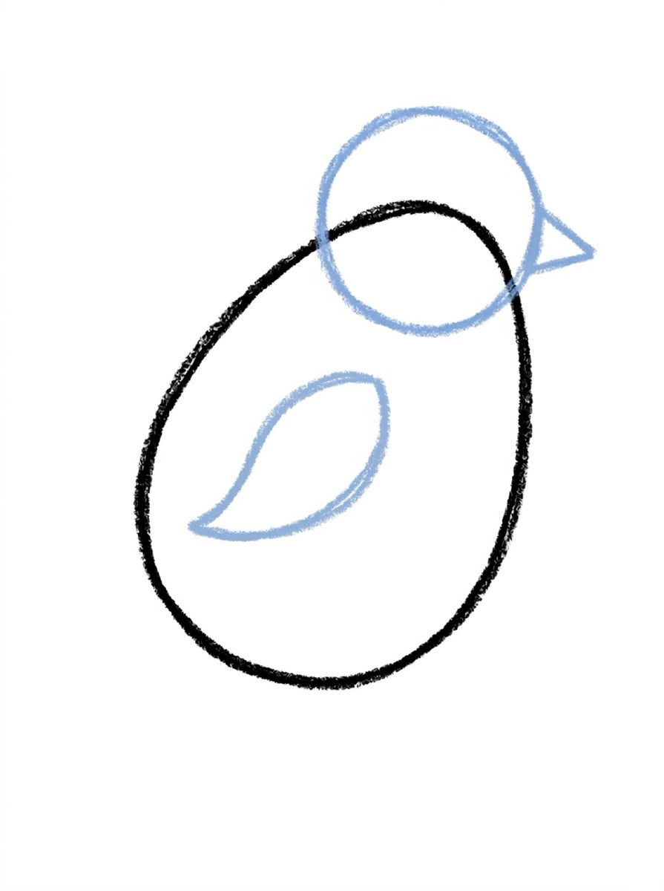
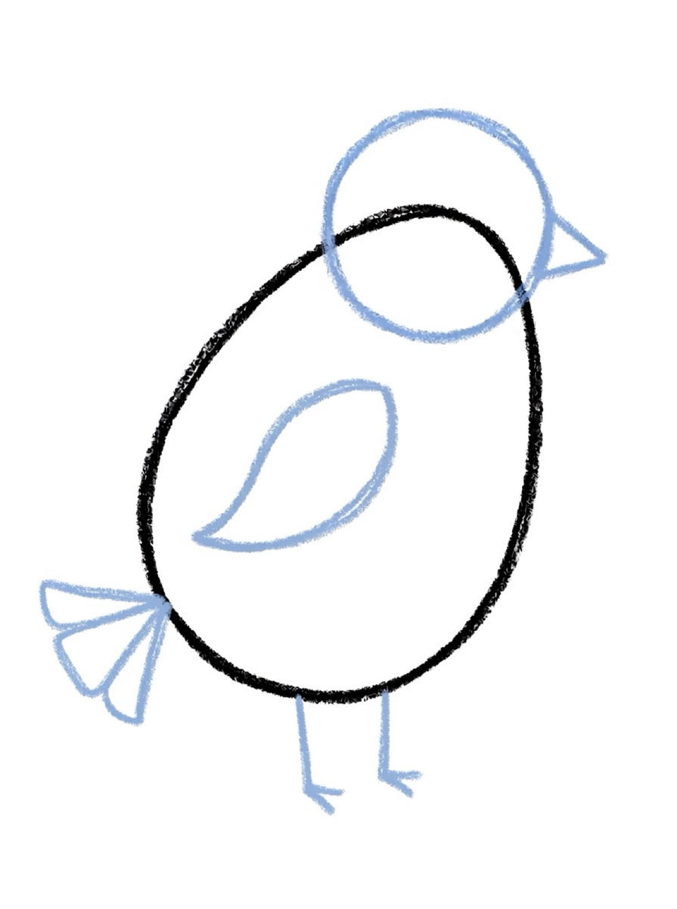

Bird Drawing for Kids How to Draw a Bird in 6 Easy Steps
Quick Answer
This free step-by-step tutorial shows kids how to draw a bird in six easy steps: an oval body, a round head, a triangle beak, a wing, a tail with legs, and color. Download the printable PDF, grab crayons, and follow along together. Made for ages 4 and up — no signup needed, just print and draw.
At a Glance
- Subject: How to draw a bird
- Ages: 3+
- Steps: 6 steps
- Time: ~10 min
- Difficulty: Easy
- Supplies: Paper, crayons
Birds are secretly one of the easiest animals to draw — it's ovals all the way down. And once kids learn this little bird, they can perch it on branches, wires, and rooftops all over their drawings. It is a bird drawing easy enough for preschoolers to finish in one sitting — two shapes to start, then one detail at a time.
✏️ How to Draw a Bird: Step by Step
One step per box — draw each new part in a different color so kids can see exactly what changed.
Step 1: The Body

Draw a plump oval tilted slightly, like an egg leaning to one side. This is the bird's body.
Step 2: The Head

Draw a smaller circle at the top of the oval, overlapping it, for the head.
Step 3: The Beak

Draw a small triangle on the front of the head for the beak.
Step 4: The Wing

Draw a curved leaf shape on the side of the body for the wing.
Step 5: Tail and Legs

Add a fan-shaped tail at the back and two thin stick legs underneath.
Step 6: Face and Color

Add a dot eye, then color your bird — blue jay, red robin, or any color you dream up!
📊 Bird Drawing by Age
Every age can join in — just adjust the job.
| Age | What they can do | Tip |
|---|---|---|
| 3–4 | Trace the oval body and color it in | Draw the beak triangle for them — small triangles are tricky |
| 4–5 | Draw body, head, and beak with help | Stick legs can be simple straight lines at this age |
| 6+ | Draw the whole bird solo | Challenge: draw three birds on a telephone wire |
🖨️ Download Your Free Bird Drawing Printable
The printable lays out all 6 steps one per box, big enough for little hands — kids draw right alongside each step.
⬇️ Open Free Printable 🖨️ Print🎁 Free printable for ages 3+
🐦 Dawn Chorus Gallery
Draw the same bird three times but color each one like a different real bird — blue jay, cardinal, robin. Look up photos together first and spot the differences. Kids learn that drawing starts with looking, and the color-matching is the fun part.
🐦 Bird Drawing Easy — Step by Step
If you're looking for birds how to draw, it's simpler than it looks. Every bird — robin, sparrow, cardinal, blue jay — starts with the same two shapes: an oval body and a round head. Once your child can draw those two shapes, they can draw any bird. The beak, wing, tail, and legs are just details added one at a time.
Here's the pattern for birds how to draw any bird in 6 steps. Step 1: oval body. Step 2: circle head. Step 3: triangle beak. Step 4: curved wing. Step 5: tail and legs. Step 6: face and color. That's it. The same 6 steps work for every bird on this page, and for every bird your child wants to draw next.
For kids who want to draw different birds, the trick is changing just two things: the beak shape and the colors. A cardinal has a short cone beak and red feathers. A robin has a small pointed beak and an orange belly. A blue jay has a crest and blue wings. Same bird drawing, different details — and kids love discovering that.
For the easiest possible bird drawing version, skip the legs and tail on the first try. Body + head + beak = a bird. Once your child has that, add the wing, then the tail, then the legs. Building up one piece at a time is how a bird drawing stays easy.
What You'll Need to Draw a Bird
Blue, yellow, or red for the body — let your kid pick their favorite bird color. Black for the outlines, orange or yellow for the beak. The wing is the hardest part, so a crayon with a fine tip helps. Plain white paper is best; the bird's simple shapes get lost on busy backgrounds.
What They're Learning
This bird is built from just two shapes: an oval body and a circle head. That simplicity is the lesson — complex things break down into easy parts. The beak (a triangle) adds a third shape, and positioning the wing correctly on the body works on understanding where things sit in space relative to each other.
Make It Yours
Turn it into different birds: a long beak makes a toucan, a crest on the head makes a cardinal, webbed feet make a duck. Kids can draw a nest with eggs under their bird, add a worm in the beak, or create a whole flock at different sizes. Drawing the bird perched on a branch adds a nice extra challenge. Or skip the branch, spread both wings wide and angled up, and fan the tail — that is how to draw birds in flight, and a few clouds underneath sell the height.
🛒 Our Favorite Drawing Supplies
These are the supplies we reach for in our own home — washable (because kids), quality paper, and enough colors to avoid fights.
As an Amazon Associate, MomYouNeedThis earns from qualifying purchases — at no extra cost to you.
🐦 How to Draw Bird Step by Step
Learning how to draw bird step by step starts with two shapes: a round body and a smaller round head. Add a triangle beak, a wing, legs, and a tail, and you have a bird. How to draw bird step by step is mostly circles — which is why it is one of the best first drawings for a preschooler.
The wing is the key to how to draw bird step by step. One curved shape on the side of the body, like a leaf. If the wing is in place, the drawing reads as a bird even if everything else is simple. That is why how to draw bird step by step tutorials put the wing in the middle — kids get the bird payoff early.
Once your child knows how to draw bird step by step, they can add a branch, a nest, or a worm. The bird is the base; the scene is where their imagination takes over.
See free bird printable for more.
🕊️ Dove Birds Drawing
A dove birds drawing is one of the most peaceful pictures a child can make. Start with the bird tutorial on this page, then make the body soft white, the wings smooth, and the beak small. A dove birds drawing is really just the bird tutorial with gentle colors and a calm pose.
The key to a dove birds drawing is the olive branch: one small curved stem with a few leaves in the beak. That little branch is what turns a white bird into a dove. Kids love adding it because it tells a story.
Follow the bird steps on this page, color it white and soft gray, and add the olive branch. That is a dove birds drawing — a lovely picture for a card or a quiet afternoon.
See free bird printable for more.
🦜 Parrot Bird Drawing
A parrot bird drawing is the most colorful bird a child can make. Start with the bird tutorial on this page, then give it a big curved beak and bright feathers — red, blue, green, yellow, all at once. A parrot bird drawing is the one bird where wild colors are correct.
The beak is what makes a parrot bird drawing read as a parrot: big, curved, and slightly hooked. Draw the beak bigger than the bird tutorial shows, and the whole picture becomes a parrot instantly.
Use the bird steps on this page, add the big beak, and go wild with colors. A parrot bird drawing is a great excuse to use every crayon in the box.
See free bird printable for more.
🦅 How to Draw Birds Flying
Learning how to draw birds flying is easier than it looks. The secret is the wings: instead of wings tucked at the sides, draw them spread wide in a V shape, angled slightly upward like the bird is gliding. Once kids learn how to draw birds flying with spread wings, every bird picture feels alive.
When you practice how to draw birds flying, start with the body from the bird tutorial on this page, then replace the side wings with two big curved wings reaching up and out. A few curved lines under the wings suggest feathers, and a fanned tail reads as flying right away.
Draw the body, spread the wings, fan the tail, and add a cloud or two and the bird is soaring. That is how to draw birds flying — wings up, body small, sky big.
See free bird printable for more.
🪹 Bird Nest Drawing
A bird nest drawing is a cozy little picture: a bowl shape made of twigs, with one or two eggs inside. Start with a half-circle bowl, then add crisscross lines for twigs. A bird nest drawing is mostly just a bowl with messy lines — kids love the messy part.
The eggs are what make a bird nest drawing special. Draw two or three small ovals inside the bowl, in soft blue or speckled brown. A tiny bird perched on the edge makes the nest feel like home.
Draw the bowl, add the twigs, drop in the eggs, and perch the bird from this page on the edge. That is a bird nest drawing — a sweet spring picture.
See free bird printable for more.
🔥 How to Draw Phoenix Bird
Learning how to draw phoenix bird pictures is a fun fantasy project. A phoenix is a fire bird, so start with the bird tutorial on this page, then give it long flowing tail feathers in red, orange, and gold. When kids learn how to draw phoenix bird art, the colors do half the storytelling.
The tail is the star when you learn how to draw phoenix bird drawings: three or four long curved feathers flowing behind the body, like ribbons. Add flame shapes around the wings to show the fire.
Follow the bird steps, add the flowing tail and flame colors. That is how to draw phoenix bird art — a magical picture for any fantasy-loving kid.
See free bird printable for more.
🐦 Step by Step Drawing Birds
Step by step drawing birds is the method behind this whole page. Each step shows the full bird so far with only the new part highlighted, so kids never have to guess. This bird drawing tutorial works because one new shape per step keeps it doable.
The six steps for step by step drawing birds are: body oval, head circle, beak, wings, tail and legs, and color. Follow them in order and a finished bird appears.
Print the PDF and cover the later steps with your hand. Step by step drawing birds works best when kids only see the current step. This bird drawing tutorial works for ages 4 and up — younger kids can trace the shapes; older kids can draw freehand and add their own details.
See free bird printable for more.
🐤 Cute Bird Drawings Easy
Cute bird drawings easy is the goal for every kid who loves animals. The trick is round shapes: a round body, a round head, dot eyes, and a tiny beak. Cute bird drawings easy always start round — round reads as friendly, and friendly reads as cute.
When kids make cute bird drawings easy, soft colors help: yellow, pink, sky blue, lavender. A tiny blush dot on each cheek makes the bird look like it is smiling.
Follow the bird tutorial on this page, keep everything round, add dot eyes and a smile. That is cute bird drawings easy — and kids will want to draw a whole flock.
See free bird printable for more.
🐦 Small Bird Drawing
A small bird drawing is perfect for little hands and short attention spans. One small oval, one small circle, a triangle beak, and two lines for legs — that is a small bird drawing in four shapes. Small means fast, and fast means finished before wiggles set in.
The charm of a small bird drawing is that it fits anywhere: in the corner of a letter, on a bookmark, at the top of a birthday card. Draw three or four small birds in a row and you have a whole flock.
Use the bird tutorial on this page but shrink every shape. That is a small bird drawing — quick, cute, and endlessly reusable.
See free bird printable for more.
✏️ Bird Drawing Outline
A bird drawing outline is the skeleton of the picture: the outer shapes before any color or detail. Start with a big oval for the body and a circle for the head — that bird drawing outline is the foundation everything else hangs on.
When kids make a bird drawing outline, light pencil lines help. Press lightly for the outline, then go darker once the shapes look right. Erasing a light outline is easy; erasing a dark one is not.
Follow the first two steps of the tutorial on this page and stop — that is your bird drawing outline. Color it in, or trace it onto a fresh sheet for a clean copy.
See free bird printable for more.
❓ Bird Drawing FAQs
What is the easiest way for a kid to draw a bird?
Draw a plump tilted oval for the body and a smaller circle on top for the head. Add a triangle beak, a curved wing, a fan tail, and stick legs. It's ovals, a circle, and a triangle — nothing harder.
What age can kids start learning to draw a bird?
Most kids can draw the oval body and circle head around age 4 with help, and the full bird solo by 5 or 6. Younger kids can trace the shapes and focus on coloring.
What supplies do we need to draw a bird?
Paper and crayons or markers — grab blues, reds, and yellows for classic birds. The free printable PDF lays out all six steps one per box so kids can draw right alongside each step.
Is the bird drawing printable really free?
Yes — every printable on MomYouNeedThis is 100% free to download and print. No signup, no payment, just tap the download button.
Where can I find birds how to draw for kids?
Right here! This page teaches birds how to draw in 6 easy steps. Start with an oval body, add a circle head, then beak, wing, tail, and legs. The same steps work for robins, cardinals, sparrows, and blue jays — just change the beak shape and colors.
What is the easiest bird drawing for kids?
This page! It teaches a bird drawing easy in 6 steps: oval body, circle head, triangle beak, curved wing, fan tail and legs, and face and color. The bird is built from just three shapes — oval, circle, triangle — so it's easy enough for a 3-year-old to trace and a 5-year-old to draw solo.
How do I print the bird drawing tutorial?
Open the PDF and print at 100% scale (not 'fit to page') so the drawing boxes stay big enough for little hands. The printable is designed to stay large — never shrunk to force a fit.
What is the easiest way to learn how to draw bird step by step?
The easiest way to learn how to draw bird step by step is a round body, a smaller round head, a triangle beak, a curved wing, legs, and a tail. This how to draw bird step by step method takes six steps and works for kids as young as three.
What makes a good dove birds drawing?
Follow the bird tutorial on this page, color the bird white, and add a small olive branch in its beak. That is the whole dove birds drawing.
What makes a good parrot bird drawing?
Follow the bird tutorial on this page, draw a big curved beak, and color the feathers bright red, blue, green, and yellow. That is a parrot bird drawing.
What is the easiest way for how to draw birds flying?
Draw the bird body from the tutorial, then spread the wings wide in a V shape instead of tucking them at the sides. That is how to draw birds flying in one change.
What is the trick for how to draw birds in flight?
Draw the bird body, spread both wings wide and angled up, fan the tail, and add motion lines. That is how to draw birds in flight.
How do you make a bird nest drawing for kids?
Draw a half-circle bowl, add crisscross lines for twigs, and place two or three small oval eggs inside. That is a bird nest drawing.
What is the easiest way for how to draw phoenix bird pictures?
Follow the bird tutorial, add long flowing tail feathers in red, orange, and gold, and draw flame shapes around the wings. That is how to draw phoenix bird art.
What are the steps for step by step drawing birds?
The steps are: body oval, head circle, beak, wings, tail and legs, and color. That is step by step drawing birds in six steps.
How do you make cute bird drawings easy for kids?
Use round shapes, dot eyes, a tiny beak, and soft colors. Round shapes and a smile are what make cute bird drawings easy.
How do you make a small bird drawing for kids?
Draw a small oval body, a small circle head, a triangle beak, and two lines for legs. That is a small bird drawing in four shapes.
Is this bird drawing tutorial good for beginners?
Yes — this bird drawing tutorial uses six steps with the new part highlighted at each stage, so beginners always know what to draw next.
How do you make a bird drawing outline?
Draw a big oval for the body and a circle for the head with light pencil lines. That is a bird drawing outline — the foundation for the full picture.
What is a sketch bird drawing, and how do kids start one?
A sketch bird drawing is the light pencil version of the bird before any color goes on. Start with the oval body and circle head from the first two steps on this page, press lightly so mistakes erase cleanly, then go over the lines you like and color it in.
Is this bird drawing easy enough for beginners?
Yes — the bird is built from just two shapes, an oval body and a circle head, with a triangle beak, a curved wing, a tail, and stick legs added over six steps. It is rated easy for ages 3+, and the free printable lays out every step one per box.
📚 Keep Exploring
- ✏️ All 53 Drawing Tutorials 53 free step-by-step drawing tutorials for kids.
- 🐾 Animal Coloring Free printable animal coloring pages for little learners.
- ✏️ Drawing Practice Free printable drawing pre-writing worksheet for toddlers.